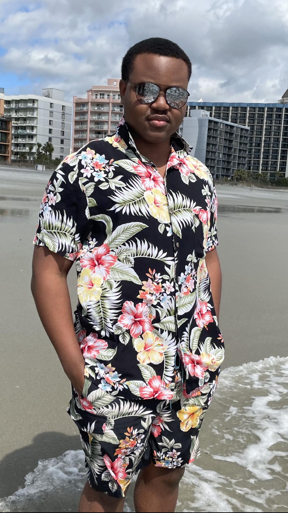

Ramone M. “Joyboy” Thompson : Introduction

- Personal Background: I was born in Kingston, Jamaica but I was mostly raised in the United States. I lived in the Bronx in New York city from kindergarten to 3rd grade and then I moved to Charlotte, North Carolina when I was in the 4th grade and I have lived here ever since. I really like Charlotte because it is a major city but does not feel overwhelming like New York city.
- Professional Background: My very first job was a lifeguard job at a local pool in 2021. I quickly got promoted to lifeguard manager and finished out the summer in that position. I then got an internship the next summer in 2022 as an installation technician installing smart boards at local high schools in the Charlotte Mecklenburg area. Finally, I recently completed an internship with Fifth Third bank in Cincinnati, Ohio and I really enjoyed my time there. I will use that experience to try and get an internship in Charlotte next summer in 2024.
- Academic Background: I went to a special high school called a middle college that allowed me to start college halfway through my high school career. So by the time I graduated from high school, I was already halfway through college. I then got accepted to UNC Charlotte and started attending in the fall semester of 2022.
- Background in this Subject: I have taken 1 class in high school that was related to website design and development and I actually liked it! So ever since I have been wanting to dive back into the field to see what it would be like to do it more seriously and even professionally at some point in the future. I am really looking forward to learning more about HTML, CSS, and Javascript in this class!
- Primary Computer Platform: I primarily use MacOS on my M2 Macbook Pro but I also have this windows laptop that I use occasionally for gaming and I think I would like to start getting more familiar with windows and programming on a windows machine.
-
Courses I'm Taking & Why:
- ITIS 3130 - Human-Centered Design: I want to be a mobile or web designer and developer so knowing how humans interact with design in an interface would be very advantageous to my future career prospects. I also just like seeing my designs come to fruition through the medium of code.
- HONR 3700-H01 - Comic books, manga, and graphic novels: I am in the honors college and we are required to take a 3700 course and this was one of the subjects I was interested in. I frequently read manga like Demon slayer, Fire force, Jujutsu Kaisen, One piece, and Black clover. This will be the course that I relax in and enjoy reading different stories from different authors.
- ITIS 3135 - Web App Design and Development: I want to know how to break into the field of website development because I am more of a visual coder that needs to see the results of my code in real time. I eventually want to be a full stack developer so learning front end first will be advantageous.
- ITIS 3200 - Intro to Info Security & Privacy: I know that websites are constantly being attacked by malicious hackers so knowing how to defend my website will be helpful if I want to get into information security in the future.
- ITSC 2175 - Logic and Algorithms: I am a computer science major so I am required to take this course to complete my concentration in information technology. I am not really interested in discrete mathematics but it seems useful for programming certain logical statements.
- Funny/Interesting Item to Remember me by: I ride a red Onewheel around campus very often so if you see me, dont be afraid to say hello! If you dont know what a Onewheel is, search it up on Google, there are like 8 people on campus that own one.
- I'd also like to Share: I love Marvel movies and anime so if you are interested in either of those things, please reach out to me! I'd love to talk about all the theories I have about Marvel and some of the anime I watch.
- I will be graduating in Fall semester of 2024!
- I was born in Kingston, Jamaica but moved with my family to the United States when I was 1. I lived in New York until the 2nd grade and then moved with my Dad to Charlotte, NC.